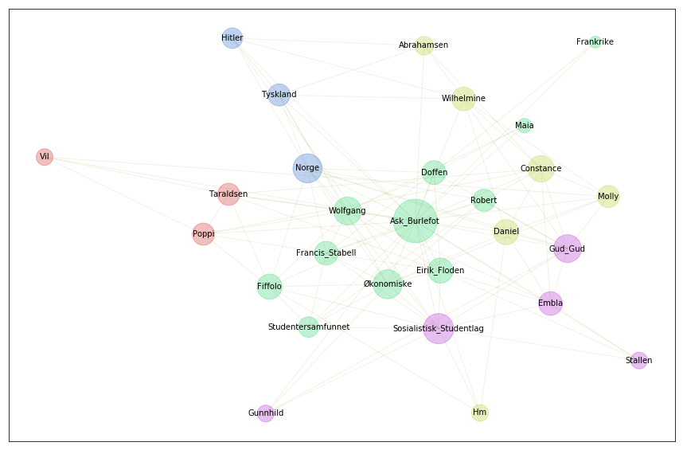
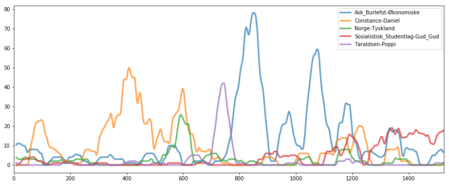

Oppstart
Contents

Oppstart#
from dhlab.module_update import update, css
import dhlab.nbtext as nb
from dhlab.nbtext import get_urn, make_graph, get_urn, relaterte_ord, navn, totals
import dhlab.graph_networkx_louvain as gnl
import dhlab.token_map as tm
%matplotlib inline
plot = lambda x, lw=3, alpha= 0.7: x.plot(figsize=(15,6), lw=lw, alpha=alpha)
from dhlab import Corpus
import dhlab as dh
import warnings
warnings.filterwarnings('ignore')
css()
Navn i bøker#
Finn en bok.
urns = Corpus(doctype="digibok", author="mykle", title="røde")
# urns.frame.urn.to_list()
urns
| dhlabid | urn | title | authors | oaiid | sesamid | isbn10 | city | timestamp | year | publisher | langs | subjects | ddc | genres | literaryform | doctype | ocr_creator | ocr_timestamp | |
|---|---|---|---|---|---|---|---|---|---|---|---|---|---|---|---|---|---|---|---|
| 0 | 100475735 | URN:NBN:no-nb_digibok_2008111304085 | Sangen om den røde rubin | Mykle , Agnar | oai:nb.bibsys.no:990100392604702202 | 97356f611c399a74591d352f15cda72e | 8205277400 | [Oslo] | 20010101 | 2001 | Gyldendal | nob | 839.823 | novel | Skjønnlitteratur | digibok | nb | 20060101 | |
| 1 | 100442704 | URN:NBN:no-nb_digibok_2008100104083 | Sangen om den røde rubin | Mykle , Agnar | oai:nb.bibsys.no:999802005804702202 | b0177425b68689c76492fc12b2314d5d | 8205253617 | [Oslo] | 19980101 | 1998 | Gyldendal | nob | 839.823 500 "Teksten i nærværende utgave følge... | fiction | Skjønnlitteratur | digibok | nb | 20060101 | |
| 2 | 100437990 | URN:NBN:no-nb_digibok_2021030248601 | Sangen om den røde rubin : roman | Mykle , Agnar | oai:nb.bibsys.no:991001720244702202 | 8f4bd26da544492fa32ceca23704d211 | [Oslo] | 20100101 | 2010 | Gyldendal | nob | norsk / litteratur / roman | 839.823 | novel | Skjønnlitteratur | digibok | nb | 20060101 | |
| 3 | 100457241 | URN:NBN:no-nb_digibok_2008021404040 | Sangen om den røde rubin | Mykle , Agnar | oai:nb.bibsys.no:999524738954702202 | 7783c9f0eaf1279650d64ffef1f32139 | 8205232660 | Oslo | 19950101 | 1995 | Gyldendal | nob | norske / romaner / 1950-tallet | 839.823 | fiction | Skjønnlitteratur | digibok | nb | 20060101 |
| 4 | 100437352 | URN:NBN:no-nb_digibok_2021031509001 | Sangen om den røde rubin | Borgersen , Morten / Mykle , Agnar / Mykle , A... | oai:nb.bibsys.no:991011745004702202 | 3aacb9e9c9bc5d84de758c337a161eac | [Oslo] | 20100101 | 2010 | Riksteatret | nob | 792.9 | drama | Skjønnlitteratur | digibok | nb | 20060101 | ||
| 5 | 100521141 | URN:NBN:no-nb_digibok_2007052404016 | Sangen om den røde rubin : roman | Mykle , Agnar | oai:nb.bibsys.no:998620665654702202 | 94e9c5eb87ef88836c675a98793e5ba8 | 8205040850 | Oslo | 19670101 | 1967 | Gyldendal | nob | norsk / litteratur / romaner | 839.823 | fiction | Skjønnlitteratur | digibok | nb | 20060101 |
| 6 | 100280507 | URN:NBN:no-nb_digibok_2016020808126 | Sangen om den røde rubin | Mykle , Agnar | oai:nb.bibsys.no:990005305814702202 | 08b690a1662d4725cb3d1e8d719567df | 8205273197 | [Oslo] | 20000101 | 2000 | Det Nye | nob | 839.823 | fiction | Skjønnlitteratur | digibok | nb | 20060101 | |
| 7 | 100263007 | URN:NBN:no-nb_digibok_2015090129001 | Sangen om den røde rubin : roman | Mykle , Agnar | oai:nb.bibsys.no:997521646004702202 | 16af2b161b8aa4d9f8ea5378b19c8aec | Oslo | 19560101 | 1956 | Gyldendal | nob | 839.93 / 839.82 | fiction | Skjønnlitteratur | digibok | nb | 20060101 | ||
| 8 | 100505038 | URN:NBN:no-nb_digibok_2009033100094 | Sangen om den røde rubin | Mykle , Agnar | oai:nb.bibsys.no:990222770724702202 | 187b355556860869828990c16fa30ce7 | 8252547745 | [Oslo] | 20020101 | 2002 | Den norske bokklubben | nob | 839.823 | fiction | Skjønnlitteratur | digibok | nb | 20060101 | |
| 9 | 100243069 | URN:NBN:no-nb_digibok_2015022308062 | Sangen om den røde rubin : fritt etter Agnar M... | Borgersen , Morten / Mykle , Agnar | oai:nb.bibsys.no:991011746674702202 | 1f6b7eab8b5d4edeb8d4c291b2705879 | Oslo | 20100101 | 2010 | Riksteatret | nob | Uklassifisert | digibok | nb | 20060101 |
# Fetch URNs
# urns = nb.book_urn(author = 'mykle%', title = '%røde%', limit=100)
urns = Corpus(doctype="digibok", author="mykle", title="røde", limit=100).frame.urn.to_list()
urns
['URN:NBN:no-nb_digibok_2008111304085',
'URN:NBN:no-nb_digibok_2009033100094',
'URN:NBN:no-nb_digibok_2008012304077',
'URN:NBN:no-nb_digibok_2018071607007',
'URN:NBN:no-nb_digibok_2009011504069',
'URN:NBN:no-nb_digibok_2021031509001',
'URN:NBN:no-nb_digibok_2015090129001',
'URN:NBN:no-nb_digibok_2008100104083',
'URN:NBN:no-nb_digibok_2007052404016',
'URN:NBN:no-nb_digibok_2021030248601',
'URN:NBN:no-nb_digibok_2016020808126',
'URN:NBN:no-nb_digibok_2008021404040',
'URN:NBN:no-nb_digibok_2014040406070',
'URN:NBN:no-nb_digibok_2012020708059',
'URN:NBN:no-nb_digibok_2008021104029',
'URN:NBN:no-nb_digibok_2015022308062']
Her ønsker vi den komplette, så vi kan bruke kommandoen book_count() for å få antallet ord i hver bok.
help(dh.Chunks)
Help on class Chunks in module dhlab.text.chunking:
class Chunks(builtins.object)
| Chunks(urn=None, chunks=1000)
|
| Create chunks from a text.
|
| Methods defined here:
|
| __init__(self, urn=None, chunks=1000)
| :param urn: str or list
| :param chunks: {'para', 'avsn'} or int
|
| to_pandas(self)
| Vectorize into a pandas dataframe with words a index
|
| ----------------------------------------------------------------------
| Data descriptors defined here:
|
| __dict__
| dictionary for instance variables (if defined)
|
| __weakref__
| list of weak references to the object (if defined)
help(dh.Counts)
Help on class Counts in module dhlab.text.conc_coll:
class Counts(dhlab.text.dhlab_object.DhlabObj)
| Counts(corpus=None, words=None)
|
| Provide counts for a corpus - shouldn't be too large
|
| Method resolution order:
| Counts
| dhlab.text.dhlab_object.DhlabObj
| builtins.object
|
| Methods defined here:
|
| __init__(self, corpus=None, words=None)
| Initialize self. See help(type(self)) for accurate signature.
|
| sum(self)
|
| ----------------------------------------------------------------------
| Class methods defined here:
|
| from_df(df) from builtins.type
|
| ----------------------------------------------------------------------
| Methods inherited from dhlab.text.dhlab_object.DhlabObj:
|
| __repr__(self) -> str
| Return the string representation of the DhlabObj frame attribute
|
| head(self, n=5)
|
| sort(self, by=None, asc=False)
|
| tail(self, n=5)
|
| to_csv(self, path)
|
| to_excel(self, path)
|
| ----------------------------------------------------------------------
| Class methods inherited from dhlab.text.dhlab_object.DhlabObj:
|
| from_csv(path) from builtins.type
|
| ----------------------------------------------------------------------
| Data descriptors inherited from dhlab.text.dhlab_object.DhlabObj:
|
| __dict__
| dictionary for instance variables (if defined)
|
| __weakref__
| list of weak references to the object (if defined)
dh.Chunks("URN:NBN:no-nb_digibok_2015022308062")
<dhlab.text.chunking.Chunks at 0x7f4065b376a0>
[nb.book_count(x) for x in urns]
---------------------------------------------------------------------------
KeyboardInterrupt Traceback (most recent call last)
Cell In[20], line 1
----> 1 [nb.book_count(x) for x in urns]
Cell In[20], line 1, in <listcomp>(.0)
----> 1 [nb.book_count(x) for x in urns]
File ~/.virtualenvs/digital_tekstanalyse-d0erqq9h/lib/python3.10/site-packages/dhlab/legacy/nbtext.py:222, in book_count(urns)
220 def book_count(urns):
221 params = {'urns': urns}
--> 222 r = requests.post("https://api.nb.no/ngram/book_count", json=params)
223 return dict(r.json())
File ~/.virtualenvs/digital_tekstanalyse-d0erqq9h/lib/python3.10/site-packages/requests/api.py:115, in post(url, data, json, **kwargs)
103 def post(url, data=None, json=None, **kwargs):
104 r"""Sends a POST request.
105
106 :param url: URL for the new :class:`Request` object.
(...)
112 :rtype: requests.Response
113 """
--> 115 return request("post", url, data=data, json=json, **kwargs)
File ~/.virtualenvs/digital_tekstanalyse-d0erqq9h/lib/python3.10/site-packages/requests/api.py:59, in request(method, url, **kwargs)
55 # By using the 'with' statement we are sure the session is closed, thus we
56 # avoid leaving sockets open which can trigger a ResourceWarning in some
57 # cases, and look like a memory leak in others.
58 with sessions.Session() as session:
---> 59 return session.request(method=method, url=url, **kwargs)
File ~/.virtualenvs/digital_tekstanalyse-d0erqq9h/lib/python3.10/site-packages/requests/sessions.py:587, in Session.request(self, method, url, params, data, headers, cookies, files, auth, timeout, allow_redirects, proxies, hooks, stream, verify, cert, json)
582 send_kwargs = {
583 "timeout": timeout,
584 "allow_redirects": allow_redirects,
585 }
586 send_kwargs.update(settings)
--> 587 resp = self.send(prep, **send_kwargs)
589 return resp
File ~/.virtualenvs/digital_tekstanalyse-d0erqq9h/lib/python3.10/site-packages/requests/sessions.py:701, in Session.send(self, request, **kwargs)
698 start = preferred_clock()
700 # Send the request
--> 701 r = adapter.send(request, **kwargs)
703 # Total elapsed time of the request (approximately)
704 elapsed = preferred_clock() - start
File ~/.virtualenvs/digital_tekstanalyse-d0erqq9h/lib/python3.10/site-packages/requests/adapters.py:489, in HTTPAdapter.send(self, request, stream, timeout, verify, cert, proxies)
487 try:
488 if not chunked:
--> 489 resp = conn.urlopen(
490 method=request.method,
491 url=url,
492 body=request.body,
493 headers=request.headers,
494 redirect=False,
495 assert_same_host=False,
496 preload_content=False,
497 decode_content=False,
498 retries=self.max_retries,
499 timeout=timeout,
500 )
502 # Send the request.
503 else:
504 if hasattr(conn, "proxy_pool"):
File ~/.virtualenvs/digital_tekstanalyse-d0erqq9h/lib/python3.10/site-packages/urllib3/connectionpool.py:703, in HTTPConnectionPool.urlopen(self, method, url, body, headers, retries, redirect, assert_same_host, timeout, pool_timeout, release_conn, chunked, body_pos, **response_kw)
700 self._prepare_proxy(conn)
702 # Make the request on the httplib connection object.
--> 703 httplib_response = self._make_request(
704 conn,
705 method,
706 url,
707 timeout=timeout_obj,
708 body=body,
709 headers=headers,
710 chunked=chunked,
711 )
713 # If we're going to release the connection in ``finally:``, then
714 # the response doesn't need to know about the connection. Otherwise
715 # it will also try to release it and we'll have a double-release
716 # mess.
717 response_conn = conn if not release_conn else None
File ~/.virtualenvs/digital_tekstanalyse-d0erqq9h/lib/python3.10/site-packages/urllib3/connectionpool.py:449, in HTTPConnectionPool._make_request(self, conn, method, url, timeout, chunked, **httplib_request_kw)
444 httplib_response = conn.getresponse()
445 except BaseException as e:
446 # Remove the TypeError from the exception chain in
447 # Python 3 (including for exceptions like SystemExit).
448 # Otherwise it looks like a bug in the code.
--> 449 six.raise_from(e, None)
450 except (SocketTimeout, BaseSSLError, SocketError) as e:
451 self._raise_timeout(err=e, url=url, timeout_value=read_timeout)
File <string>:3, in raise_from(value, from_value)
File ~/.virtualenvs/digital_tekstanalyse-d0erqq9h/lib/python3.10/site-packages/urllib3/connectionpool.py:444, in HTTPConnectionPool._make_request(self, conn, method, url, timeout, chunked, **httplib_request_kw)
441 except TypeError:
442 # Python 3
443 try:
--> 444 httplib_response = conn.getresponse()
445 except BaseException as e:
446 # Remove the TypeError from the exception chain in
447 # Python 3 (including for exceptions like SystemExit).
448 # Otherwise it looks like a bug in the code.
449 six.raise_from(e, None)
File /usr/lib/python3.10/http/client.py:1374, in HTTPConnection.getresponse(self)
1372 try:
1373 try:
-> 1374 response.begin()
1375 except ConnectionError:
1376 self.close()
File /usr/lib/python3.10/http/client.py:318, in HTTPResponse.begin(self)
316 # read until we get a non-100 response
317 while True:
--> 318 version, status, reason = self._read_status()
319 if status != CONTINUE:
320 break
File /usr/lib/python3.10/http/client.py:279, in HTTPResponse._read_status(self)
278 def _read_status(self):
--> 279 line = str(self.fp.readline(_MAXLINE + 1), "iso-8859-1")
280 if len(line) > _MAXLINE:
281 raise LineTooLong("status line")
File /usr/lib/python3.10/socket.py:705, in SocketIO.readinto(self, b)
703 while True:
704 try:
--> 705 return self._sock.recv_into(b)
706 except timeout:
707 self._timeout_occurred = True
File /usr/lib/python3.10/ssl.py:1274, in SSLSocket.recv_into(self, buffer, nbytes, flags)
1270 if flags != 0:
1271 raise ValueError(
1272 "non-zero flags not allowed in calls to recv_into() on %s" %
1273 self.__class__)
-> 1274 return self.read(nbytes, buffer)
1275 else:
1276 return super().recv_into(buffer, nbytes, flags)
File /usr/lib/python3.10/ssl.py:1130, in SSLSocket.read(self, len, buffer)
1128 try:
1129 if buffer is not None:
-> 1130 return self._sslobj.read(len, buffer)
1131 else:
1132 return self._sslobj.read(len)
KeyboardInterrupt:
Vi legger URN-en i en variabel. Det gjør det lettere å gjøre endringer, og kjøre notebooken på andre bøker.
BOOK = 2015090129001
Navn#
Navn er alt som starter med store bokstaver, men som også forekommer utenom punktum. Kommando er ‘names()’.
wp = nb.names(BOOK, cutoff=15)
tm.show_names(wp)
Lag 1
=========
Ask - 872
Daniel - 120
Doffen - 116
Gud - 88
Embla - 86
Robert - 67
Constance - 64
Økonomiske - 48
Eirik - 46
Fiffolo - 45
Wilhelmine - 42
Norge - 39
Stabell - 38
Molly - 37
Floden - 35
Stallen - 33
Francis - 29
Wolfgang - 28
Sosialistisk - 26
Tyskland - 26
Burlefot - 23
Sangen - 23
Abrahamsen - 22
Poppi - 22
Studentersamfunnet - 22
Studentlag - 22
Taraldsen - 22
Frankrike - 20
Gunnhild - 20
Hm - 18
Maia - 18
Vil - 17
Hitler - 16
Lag 2
=========
Eirik Floden - 23
Francis Stabell - 22
Sosialistisk Studentlag - 20
Ask Burlefot - 15
Gud Gud - 1
Lag 3
=========
Lag 4
=========
Noe kan fjernes, enkelte ord dukker opp som ikke er navn.
tm.token_map(wp)
[(('Abrahamsen',), ('Abrahamsen',)),
(('Ask',), ('Ask', 'Burlefot')),
(('Burlefot',), ('Ask', 'Burlefot')),
(('Constance',), ('Constance',)),
(('Daniel',), ('Daniel',)),
(('Doffen',), ('Doffen',)),
(('Eirik',), ('Eirik', 'Floden')),
(('Embla',), ('Embla',)),
(('Fiffolo',), ('Fiffolo',)),
(('Floden',), ('Eirik', 'Floden')),
(('Francis',), ('Francis', 'Stabell')),
(('Frankrike',), ('Frankrike',)),
(('Gud',), ('Gud', 'Gud')),
(('Gunnhild',), ('Gunnhild',)),
(('Hitler',), ('Hitler',)),
(('Hm',), ('Hm',)),
(('Maia',), ('Maia',)),
(('Molly',), ('Molly',)),
(('Norge',), ('Norge',)),
(('Poppi',), ('Poppi',)),
(('Robert',), ('Robert',)),
(('Sangen',), ('Sangen',)),
(('Sosialistisk',), ('Sosialistisk', 'Studentlag')),
(('Stabell',), ('Francis', 'Stabell')),
(('Stallen',), ('Stallen',)),
(('Studentersamfunnet',), ('Studentersamfunnet',)),
(('Studentlag',), ('Sosialistisk', 'Studentlag')),
(('Taraldsen',), ('Taraldsen',)),
(('Tyskland',), ('Tyskland',)),
(('Vil',), ('Vil',)),
(('Wilhelmine',), ('Wilhelmine',)),
(('Wolfgang',), ('Wolfgang',)),
(('Økonomiske',), ('Økonomiske',)),
(('Ask', 'Burlefot'), ('Ask', 'Burlefot')),
(('Gud', 'Gud'), ('Gud', 'Gud')),
(('Eirik', 'Floden'), ('Eirik', 'Floden')),
(('Sosialistisk', 'Studentlag'), ('Sosialistisk', 'Studentlag')),
(('Francis', 'Stabell'), ('Francis', 'Stabell'))]
Lag navnegrafen#
Kommando er make_network_name(<URN>, <liste over ord>) fra modulen token_map
graf = tm.make_network_name_graph(BOOK, tokens=wp)
Vis grafen med show_graph
gnl.show_graph(graf, spread=1.8)

Studer hvordan navnene henger sammen#
gnl.show_communities(graf)
Constance-Daniel : Constance, Daniel, Wilhelmine, Molly, Abrahamsen, Hm
Ask_Burlefot-Økonomiske : Ask_Burlefot, Økonomiske, Wolfgang, Eirik_Floden, Fiffolo, Francis_Stabell, Doffen, Robert, Studentersamfunnet, Maia, Frankrike
Norge-Tyskland : Norge, Tyskland, Hitler
Sosialistisk_Studentlag-Gud_Gud : Sosialistisk_Studentlag, Gud_Gud, Embla, Stallen, Gunnhild
Taraldsen-Poppi : Taraldsen, Poppi, Vil
Clustrene kan brukes til historieplotting (se også kapittel narrative grafer)
gcom = gnl.community_dict(graf)
gcom
{'Constance-Daniel': ['Constance',
'Daniel',
'Wilhelmine',
'Molly',
'Abrahamsen'],
'Ask_Burlefot-Økonomiske': ['Ask_Burlefot',
'Økonomiske',
'Wolfgang',
'Eirik_Floden',
'Fiffolo',
'Francis_Stabell',
'Doffen',
'Robert',
'Studentersamfunnet',
'Hm',
'Maia',
'Frankrike'],
'Norge-Tyskland': ['Norge', 'Tyskland', 'Hitler'],
'Sosialistisk_Studentlag-Gud_Gud': ['Sosialistisk_Studentlag',
'Gud_Gud',
'Embla',
'Stallen',
'Gunnhild'],
'Taraldsen-Poppi': ['Taraldsen', 'Poppi', 'Vil']}
Henter ut vekstdiagrammet med plot_book_wordbags(<urn>, <ordsekker>, window=<..>) og plotter med plot.
wp_diagram = nb.plot_book_wordbags(BOOK, gcom,window = 5000)
plot(wp_diagram.rolling(window=10).mean());
